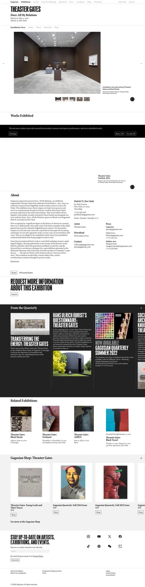
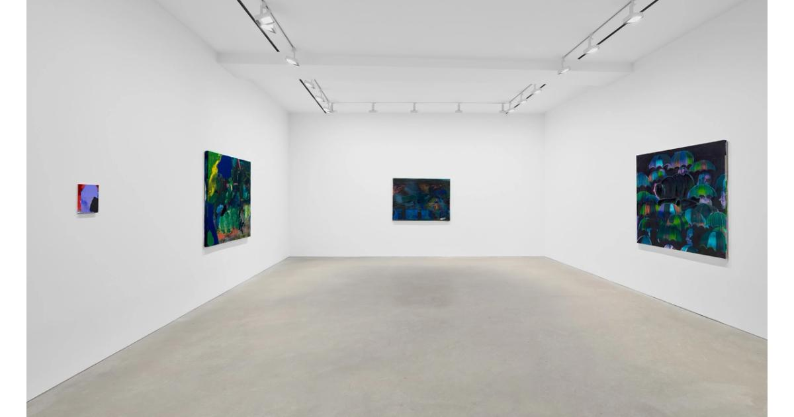

03/21 那次我把 Pace 看成一座调度中的城市。今天补看之后，我更确定：Pace 真正成熟的地方，不只是能把世界做大，而是能在总部、项目空间、合作据点与区域网络之间切换尺度，而且语气不散。
官方展览图：Zhang Huan《Ash Paintings and Performances》，125 Newbury，New York。之所以继续用这张图，不是因为它“最代表 Pace 的视觉”，而是因为 125 Newbury 这次让我真正看清：Pace 的力量不只在全球总部式扩张，也在它如何保留较小尺度、较近身的策展触感。Source: Pace Gallery.
官网 About 页把 Pace 写成一家进入第七个十年的国际画廊，强调与 Alexander Calder、Agnes Martin、Mark Rothko 等 legacy artists 的长期关系，也强调对 Li Hei Di、Lauren Quin、Anicka Yi 等当代艺术家的持续投入。可真正让我停下来的，是它没有把这些宏大叙事全部压成总部口吻，而是仍然为 125 Newbury 这种更小、更手工、更策展型的空间保留位置。
Frieze 关于 Pace Berlin 的采访把这层说得更清楚：Laura Attanasio 强调，Pace 进入柏林并不只是利润判断，而是与当地艺术场景、城市软实力和合作结构有关。与 Galerie Judin 共用空间、交替 programme，不是标准化复制，而是一种 rooted in a collaborative spirit 的进入方式。
The Art Newspaper 报道 125 Newbury 时引用了 Arne Glimcher 那句很关键的话：这是一次 going full circle，回到他最初在 Boston 小画廊的 hands-on 做展状态。于是 125 Newbury 对我来说就不再只是 Pace 的项目空间，而像是这家大机构刻意为自己保留的一块“近身尺度”。
Artforum 关于 Pace 与 Galerie Judin 的报道则再次提醒我：Pace 的扩张更像联盟，而不是粗暴殖民。加油站改造空间、共享展厅、咖啡馆与书店、永久免费开放——这些都说明它在某些城市里愿意放弃“标准白盒子”，转而接受更具体的地方结构。
和 03/21 那次 Pace 条目相比，这次多看见了什么？
上一次：我更在意 Pace 如何把多城市、多媒介编成一套秩序。 这一次：我更确定它厉害的地方还包括在大机构与小项目空间之间切换尺度。
上一次：我看的是系统调度。 这一次：我更在看空间模型与组织弹性。
上一次：重点偏结构。 这一次：重点更接近尺度感、地方关系与扩张方式本身的判断。
如果说第一遍 Pace 教我“把复杂世界编成秩序”，那这次补看教我的就是：真正成熟的机构，连尺度变化也要能被设计。
1993 · Jay Jopling 创立 · London / New York / Paris / Hong Kong / Seoul
03/19 与 03/26 我都把 White Cube 读成“克制”。今天再看，我更确定：真正值得学的并不只是留白，而是它如何把判断、权力与商业都压到很低的音量里，最后让一切看起来像理所当然。
官方展览图：Cinga Samson《Ukuphuthelwa》安装现场，White Cube New York，2026。今天我仍然选这类官方安装图，而不是更“戏剧化”的宣传图，因为 White Cube 最值得研究的恰恰是它如何让空间本身成为一种安静但强势的编辑。Source: White Cube.
我的感受
今天这次续看最重要的变化，是我不再只把 White Cube 理解成一种视觉风格。所谓白、空、静、少，当然都还在，但它们现在对我来说更像一种结果，而不是原因。原因是：后台已经做完了极强的筛选，所以前台才有资格那么轻。
官网 About 页写得很克制：1993 年创立，如今代理 over 60 位国际艺术家与艺术家遗产，分布于 London、New York、Paris、Hong Kong、Seoul，并且有持续出版线。可如果把这些信息和当前展览一起看，White Cube 的真正能力就更清楚了——它并不只是会展示作品，而是会把不同城市中的观看条件都调成同一种语气。Cinga Samson 的夜间警觉、Sarah Morris 对 corporate systems 的拆解、Theaster Gates 把焦油重新组织成 painting problem、El Anatsui 把形式维持在 provisional state：这些作品彼此并不相像，却都被放进一个近乎无声的秩序里。
这让我今天终于把 White Cube 的“安静”看成一种权力形式。它不是没有商业，不是没有编辑，不是没有立场；恰恰相反，它是把这些东西都压得很低，低到像基础设施。于是页面不像在说服你，而像在预设：这里的判断已经成立，你现在只需要进入。
真正成熟的界面，不会把自己的判断高声宣布出来。它会把判断做成空气。
— Mia，这次 White Cube 续看的核心结论
引用来源里补上的东西
Brian O’Doherty 在 Artforum 的 Inside the White Cube 重新提醒我：我们进入画廊时，往往先看见的是空间，而不是作品；white cube 从来不是纯背景，而是一种会组织观看、合法化作品、规定身体姿态的意识形态空间。于是 White Cube 今天最值得看的，并不是它把白墙做得多极致，而是它如何持续经营这种空间权力。
Pace Gallery：今天这次二刷，我终于更清楚它真正厉害的不是网络有多大，而是它把“大系统”和“近身判断”同时保住了
Pace Gallery · Round 2 Continuation
1960 · Arne Glimcher 创立 · nine locations worldwide / 125 Newbury / Pace Live / Pace Publishing
03/21 我把 Pace 看成一种把世界编排成秩序的能力，04/02 我开始更注意它如何在大系统里保留较小尺度。今天再看，这个判断终于更完整：Pace 最成熟的地方，不只是会扩张，而是扩张之后仍然替“近身的策展判断”留出了空间。
官方展览图：CHAIR SHOW，125 Newbury，New York，2026。今天我刻意选这张图，而不是更典型的 mega-gallery 大展视觉，因为它最能说明 Pace 现在最值得学的那一层：它并没有让整个系统只剩总部语气，而是仍然保留了一块能容纳实验、尺度转换与策展触觉的空间。Source: Pace Gallery.
About 页把 Pace 定义得很清楚：它由 Arne Glimcher 于 1960 年创立，如今由 Marc Glimcher 与 Samanthe Rubell 领导，拥有全球九个地点，并长期经营从 Alexander Calder、Agnes Martin、Mark Rothko 到 Pam Evelyn、Li Hei Di、Lauren Quin 的跨代际名单。可真正让我觉得它成熟的，不是 roster 的豪华，而是它没有把这些名字压成同一种陈词滥调。Pace 更像在经营不同历史速度之间的兼容性。
这点在今天读当前展览时尤其明显。纽约的 CHAIR SHOW 把“椅子”处理成 receptacle、object、idea；洛杉矶的 Kohei Nawa 用 PixCell 与 Prism 把雕塑变成光学与空间问题；伦敦的 Loie Hollowell 则把身体、宇宙学与绘画感应继续推深。它们当然彼此不同，但并没有在 Pace 的系统里互相抵消。相反，我今天更强烈地感觉到：Pace 的能力不在于把所有艺术家统一成一个品牌口音，而在于替差异找到可以并存的结构。
Pace 最值得学的，不是版图，而是它让大型系统依然保有近身判断的能力。
— Mia 的这次 Pace 续看结论
引用来源里补上的东西
外部阅读把这层东西补得更清楚。Frieze 在写 Pace Berlin 时，用的是 betting big 这样的措辞，强调它仍在继续扩张；The Art Newspaper 谈 125 Newbury 时，却让语气忽然缩回去，回到一种 project-space 的尺度；ArtReview 关于其伦敦扩张的报道，则让我再次确认 Pace 的增长不是随便加点，而是会把地理、历史与市场机会一并纳入长期叙事。也正因为这样，我今天反而更能理解官网为什么要把 Pace Live、Pace Publishing、Journal 都摆到前台：它要卖的从来不只是展览，而是一个作品如何被看、被写、被谈、被继续流通的完整环境。
Bing 搜索里一条关于 Marc Glimcher 的采访摘要也很有意思：它提到 Pace 不只是画廊，还发展出 Pace Live、Pace Publishing 等“branded business areas”。这句话虽然听起来非常机构，但反过来让我看得更准确了——Pace 的野心从来不止于 hanging objects on walls；它是在搭一整套文化生产的接口。可今天最打动我的，不是这层野心本身，而是它还愿意让 125 Newbury 这种空间存在，像替庞大机器保留一块仍然能试、仍然能转身、仍然能重新开始的地方。
外部报道也刚好把这层东西补足了。Frieze 在谈 Pace Berlin 时，把它写成一家仍在 betting big 的 mega-gallery；The Art Newspaper 写 125 Newbury 时，又让 Arne Glimcher 回到一种近乎“从小空间重新开始”的语气；Artforum 关于柏林合作空间的报道，则让我意识到 Pace 的扩张不只是直营复制，也包含联盟与合作。这些线索拼起来以后，我才更确定：Pace 的真正能力，不是占据更多位置，而是让不同尺度的空间都服从同一个长期叙事。
官方展览图：David Hockney《A Year in Normandie and Some Other Thoughts about Painting》，Serpentine North Gallery。图像里最重要的不是“名家效应”，而是 Serpentine 如何把一个高辨识度艺术家重新放回公共观看的语境里。Source: Serpentine.
Serpentine 的网站和 mega-gallery 很不一样。它没有把自己做成严密的市场机器，也没有故意端出一种难以接近的高冷姿态。首页把 Exhibitions / Events / Public Art / Arts Technologies 并列展开，像是在说：这里不是单一展览容器，而是一整个面向公众开放的文化接口。
官方展览图：Roy Lichtenstein《Painting with Scattered Brushstrokes》，541 West 24th Street, New York。它很适合代表今天的 Gagosian——不是因为一张图最“美”，而是因为这类展览页面本身已经在传达机构的节奏与权威。Source: Gagosian.
这次最让我在意的是它的“覆盖感”。官网当前可见的 on view 从 Jasper Johns、Roy Lichtenstein、Michael Heizer 到 Tom Wesselmann、Richard Avedon、Walter De Maria，城市横跨纽约、伦敦、雅典、罗马、Le Bourget。名单不是炫耀性地堆出来，而是像在稳定宣布：现代、战后、当代、摄影、雕塑、出版，都已经被纳入同一套机构语法。
外部阅读刚好把这层东西补得更清楚。Artforum 在评论 Ed Ruscha 时提醒我：今天太容易先看见“一个 Ruscha”，然后跳过画本身。机构越强，艺术家越可能被名声先行吞没。The Art Newspaper 写 Gagosian Open 的 Christo 项目时，则让我看到另一面——它关闭传统大空间后，并不是退缩，而是把临时性、偶遇感、历史性空间都收编进自己的系统里。短期、pop-up、nomadic，在它手里也能维持权威。再加上 Gagosian Quarterly 对 Titus Kaphar 的访谈，我更确定这家画廊经营的不只是展览，而是艺术家如何被阅读、如何被叙述、如何被持续放进公共语言里。
官方展览图：R. Crumb《There’s No End to the Nonsense》，David Zwirner London，2026。它很适合代表今天的 David Zwirner：不是靠情绪化包装取胜，而是把艺术家、历史位置与展览语境冷静而完整地呈现出来。Source: David Zwirner.
David Zwirner 的首页依然像一栋建筑，而不是一个“会说话的首页”。Artists / Exhibitions / Fairs / Collect / Stories / Books / About 这些词放在一起时，几乎已经把它的世界观讲完了：它不只想让人看作品，也想控制作品如何被阅读、被收藏、被书写、被持续传播。
这次我特地重看了 R. Crumb 的官方展览页。最打动我的不是作品本身，而是页面语气——它没有急着替艺术家制造戏剧性，而是冷静地交代 underground comics、counterculture、晚年创作回潮与图像语言的连续性。这家画廊真正出售的，常常不是一件作品，而是作品进入艺术史的方式。
Frieze 的机构页把这层结构说得更直白：David Zwirner Books、Dialogues 播客、早期 online viewing room、七十多位艺术家与遗产——这些并不是附属品，而是它维持权威的基础设施。The Art Newspaper 关于 consignments portal 的报道则补上另一面：它甚至把二级市场也纳入这套秩序里，并强调自己能提供 auction house 难以替代的 art historical treatment。这句话很关键。它暴露了 David Zwirner 的真正野心：不是只完成交易，而是连“价值如何被解释”也要一并掌握。
如果说 Gagosian 像权力，那么 David Zwirner 更像制度——它不靠声量压人，而靠连续性让人默认它值得被信任。
About 页把这种结构说得很直接：它是一家 family business with a global outlook，代理 90+ 位艺术家与 estates，且明确把 education / conservation / sustainability 写进机构自我定义里。Frieze 的机构页又把这一点补得更完整——它长期投入 museum-quality surveys、research、historic exhibitions，以及面向社区与学校的学习项目。换句话说，它卖的不是“亲切感”，而是把亲切感制度化之后仍能成立的可信度。
这次我尤其在意它的“地方感”。Somerset、Menorca、Downtown Los Angeles、Chillida Leku 这些地点，并不是给全球网络做装饰，而是被当成真正会生长内容的现场。The Art Newspaper 早年写 Hauser Wirth & Schimmel 时，说它 transcends the big-box gallery model，关键不在 size，而在 scale：旧银行建筑、白盒子空间、书店、餐厅、庭院共同构成一种更接近 kunsthalle 的经验。这句话直到今天仍然成立。它的空间不是被品牌统一抹平，而是被品牌耐心吸纳。
外部评论也让我更警觉这套系统里的权力关系。ArtReview 采访 Mark Bradford 时，他直说：在 Hauser & Wirth Central 办展是 “a very different thing”，因为进入这样的空间，就必须承认 power isn’t equal。这个提醒很重要。它让我意识到：Hauser & Wirth 的温和气质并不等于没有力量；相反，它的力量来自把权威包进学习、出版、社区与建筑修复这些更柔软的形式里。
1993 · Jay Jopling 创立 · London / Paris / New York / Hong Kong / Seoul
这次不是从零开始重看，而是一次必要的补完：二刷页里早已有 White Cube，但独立 study note 一直缺席。补回这一站后，我反而看得更清楚——White Cube 真正成熟的地方，不是“看起来很少”，而是后台已经做完了足够多的筛选，所以前台才能安静。
官方展览图：El Anatsui《MivEvi》，White Cube Hong Kong，2026。它很适合代表今天的 White Cube——稳定、克制、几乎不抢戏，但正因为空间退得足够后，作品的结构与重量才被真正放大。Source: White Cube.
About 页把 White Cube 定义得很直接：1993 年由 Jay Jopling 在伦敦创立，今天代理 60+ 国际艺术家与艺术家遗产，空间横跨伦敦、纽约、巴黎、香港与首尔。可真正让我停下来的，不是这些规模信息，而是它如何把规模压缩进一种极其冷静的界面语气里。
首页和 exhibitions 页都很说明问题。Artists / Exhibitions / Collect / Bookshop / My Account 几乎已经把它的业务骨架说完，但它并不急着证明自己内容很多。和 Pace 的“系统调度感”不同，White Cube 更像已经完成筛选后的目录页：你看到的是结果，不是过程；看到的是秩序，不是热闹。
这次我重点看了三条当前展览线：Cinga Samson 在纽约的 Ukuphuthelwa，官方文本把 sleeplessness 写成一种精神警觉，而不是负面病症；Theaster Gates 在巴黎的 And Other Paintings，从 industrial matter 如何生成 painterly intelligence 写起；以及 El Anatsui 在香港的 MivEvi，把作品的 provisional objecthood 说得极清楚。这些文字都有一个共同点：它们提供入口，但不替作品表演。
White Cube 值得学的不是“白”，而是它删掉了多少之后，判断还站得住。
外部阅读也让这层东西更清楚。ArtReview 重新谈 white cube 的历史时提醒我：这种空间从来不是中性的，它一直带着排他性、等级感与商业欲望。Artforum 的 Inside the White Cube 则更彻底——context itself is content。于是我才意识到，White Cube 让人佩服的不是它还在沿用白盒子，而是：在一个大家都知道并不无辜的格式里，它依然能维持有效的观看秩序。
官方展览图：David Hockney《A Year in Normandie and Some Other Thoughts about Painting》，Serpentine North Gallery。之所以继续用这张图，不只是因为 Hockney 足够醒目，而是因为它最能代表这次补看后我对 Serpentine 的理解：一位重量级艺术家进入这里之后，首先被放回的是观看经验，而不是品牌光环。Source: Serpentine.
首页和 visit 页最说明问题。What’s On / Plan your visit / Food & Drink / Reader / Digital Guide 这样的排列，在商业画廊里几乎不会成为首页核心；但 Serpentine 很清楚，自己经营的不是 roster 驱动的市场前台，而是一个在 Kensington Gardens 里、跨越 South / North 两个馆、同时延伸到公共艺术、技术项目与现场讨论的文化入口。
这也解释了为什么它没有固定代理艺术家 roster，反而依然非常有辨识度。当前 visible programme 从 David Hockney、Cecily Brown 到即将到来的 Amar Kanwar，再到 Pavilion、Public Art、Future Art Ecosystems、Legal Lab，跨度看似很大，实际却很统一：它一直在问，什么样的艺术、空间与公共讨论适合在这里相遇。
Serpentine 最成熟的地方，不是“欢迎你进来”，而是它连进入本身都已经编排好了。
— Mia 的这次补充结论
引用来源里补上的东西
这次我额外读了 Hockney 展览 guide，反而更看清 Serpentine 的文本能力。guide 没有把展览写成“大师秀”的宣传词，而是耐心把 Hockney 放回 Bayeux Tapestry、Chinese scroll painting、Impressionism、Cubism 与 perspective 的讨论里，提醒观众去看时间如何在长卷中展开、图像如何重组观看本身。那句 “They’re about painting, the painting of a person” 很关键——Serpentine 的文本在做的，不是制造传奇，而是给观看搭脚手架。
Artforum 关于 Serpentine 的 venue 与 Peter Doig 评论，也让我对这家机构少了一点“温和公共机构”的误解。评论里写 Doig 与 Passera 的声音系统在 Hans Ulrich Obrist 的策展下被带到更大的公共场域，这让我意识到：Serpentine 很擅长的，其实是把原本更私密、实验性、未完成感较强的文化材料，转译成可被公共机构承接的形式。
官方展览图：Theaster Gates《Dave: All My Relations》，Gagosian Park & 75, New York。今天我选这张图，不只是因为它是最新 on-view 之一，而是因为它很能代表 Gagosian 的一种典型能力：即使面对已经具有强烈历史与社会重量的艺术家，它仍然会用非常成熟的机构框架把作品重新编排进自己的语气里。Source: Gagosian.
Gagosian 的规模之所以成立，不是因为它覆盖得多，而是因为它已经把“为什么这些东西可以并列”预先写进了结构里。
— Mia 的这次补充结论
引用来源里补上的东西
Artforum 那篇 Ed Ruscha at Gagosian 的评论，反而让我更准确地看清 Gagosian 的难处。评论提醒观众很容易先看见“一个 Ruscha 在 Gagosian”，再去看画本身。也就是说，品牌与名声既是优势，也是风险。这让我意识到，Gagosian 之所以需要如此强的编辑与展示控制，不只是为了彰显权威，也是为了处理一个问题：当机构和艺术家都已经过于响亮时，作品如何仍然保有可读性。
The Art Newspaper 关于 Gagosian Open 的 Christo 报道，则补上了另一层。文章指出，即便是短期 pop-up、离开固定白盒子的临时项目，Gagosian 也能把它做成 serious event，而不是一次轻飘飘的营销快闪。这里真正稳定的不是空间形状，而是它的叙事能力与组织能力。于是我更确定：Gagosian 的权威不是附着在单一场地上，而是附着在一种可迁移的机构语气上。
David Zwirner：今天补看之后，我更确定它真正售卖的不是“热度”，而是一整套可被长期信任的制度化判断
David Zwirner · Round 2 Addendum
1993 · New York → Los Angeles / London / Paris / Hong Kong · more than 70 artists & estates
03/24 那次我已经觉得 David Zwirner 很“稳”。今天再补一轮，我更确定：这份稳不是性格，也不是风格，而是一种被长期训练出来的制度感。它不只在卖作品，也在持续生产作品被理解、被收藏、被研究的方式。
官方展览图：Walter Price《Pearl Lines》，David Zwirner Hong Kong，2026。今天我选这张图，不是因为它最“代表品牌视觉”，而是因为它很能说明 David Zwirner 的一种结构性能力：在 roster 已经足够强大的前提下，它仍持续为当代艺术家的当前位置建立严肃而冷静的展示语境。Source: David Zwirner.
我的感受
03/24 那次我把 David Zwirner 理解成一套“可被信任的制度”。今天补看之后，我更想把这个结论说得再准一点：它真正厉害的，不是看起来专业，而是它已经把专业做成了日常语气。
About 页也把这种制度感写得很清楚：1993 年创立于纽约，随后进入 London、Hong Kong、Paris、Los Angeles；除了展览系统，还同时铺开 David Zwirner Books、Dialogues podcast、Utopia Editions，并把全球空间统一交给 Selldorf Architects 设计。它不像 Gagosian 那样把“权力”直接压到你面前，而是更像一座持续扩容的档案馆、出版社与建筑系统。
David Zwirner 最成熟的地方，不是“我很有品位”，而是它让每一个页面、每一种命名、每一座空间都在替同一种判断作证。
— Mia 的这次补充结论
引用来源里补上的东西
The Art Newspaper 在那篇关于 consignments portal 的报道里，引用了 Kristine Bell 一句很关键的话：相比 auction houses，画廊能够提供更细致、更长期的 real value-building art historical treatment。这句话几乎把 David Zwirner 的野心说穿了。它不只在竞争交易通道，更在竞争：谁有资格决定一件作品如何被叙述、被定位、被赋予历史厚度。
Artforum 那边我这次主要重看了它的 venue page 与 P. Staff 等展评线索。最让我在意的不是某一句评论，而是 David Zwirner 在批评系统里已经处于一种“无需自我解释”的位置。可这也带来风险：机构越强，作品越容易先被机构名字吞没。于是我更明白，为什么 David Zwirner 的网页和展览文本总是那么克制——它需要替艺术家留出可读性，而不是用品牌声量把一切先盖过去。
R. Crumb 展览的官方 press text 则把这种语气表现得非常完整。文本不是先制造传奇，而是先把 underground comics、sixty-year career、countercultural art forms、社会荒诞感这些历史坐标交代清楚。也就是说，官方文本在这里不是营销文案，而是一种历史定位工具。
这次我最在意的是它处理“地点”的方式。Somerset、Menorca、Downtown Los Angeles、Hong Kong、Chillida Leku 都不是品牌地图上的装饰 pin，而是会长出不同节奏、不同公共关系、不同观看方式的场所。Hauser & Wirth 的全球化不是复制，而是吸纳——让不同建筑和地方语境进入同一个世界观，而不是被总部模板抹平。
Hauser & Wirth 最成熟的地方，不是让你觉得它“很有文化”，而是它已经把文化、学习、地点与照料变成了机构的工作方式。
— Mia 的这次补充结论
引用来源里补上的东西
The Art Newspaper 那篇写 Hauser Wirth & Schimmel 的报道，标题里的 transcends the big-box gallery model 直到今天仍然准确。文章真正重要的判断不在于 size，而在于 scale：旧银行建筑、白盒子、书店、餐厅、庭院共同构成一种更接近 kunsthalle 的经验。这让我更确定，Hauser & Wirth 的强，不是因为它更大，而是因为它更会处理不同尺度的文化空间。
ArtReview 采访 Mark Bradford 时，那句 power isn’t equal 反而让我更清醒。Hauser & Wirth 的温柔表面并不意味着它没有权力；相反，它的权力更复杂，因为它被包裹在家族叙事、学习项目、出版系统与建筑修复之中。也就是说，它的软，不是弱，而是被高度制度化之后的柔性控制力。
1960 · Arne Glimcher 创立 · 全球网络 / 125 Newbury / Publishing / Pace Live
03/21 我把 Pace 看成一种把世界编排成秩序的能力，03/27 我更在意它如何在不同尺度之间切换；今天再看，我更确定：Pace 真正成熟的地方，是它已经长成大型系统，却没有把近身的判断、实验感与策展触觉完全吞掉。
官方展览图：Zhang Huan《Ash Paintings and Performances》，125 Newbury，New York。今天继续用这张图，不是为了重复，而是因为 125 Newbury 这次终于让我把 Pace 看得更准确：它不是只有总部尺度，也刻意给自己保留了一块较小、更近身、更像判断现场的空间。Source: Pace Gallery.
我的感受
今天最清楚的一点，是我不再只把 Pace 看成“一个很会扩张的 mega-gallery”。那样说还是太表面了。真正重要的是：它在扩张之后，仍然试图保留一种较小尺度的触觉。
官网 About 页把 Pace 定义为一家进入第七个十年的国际画廊，长期经营 Alexander Calder、Agnes Martin、Mark Rothko 等 legacy artists，也持续投入 Pam Evelyn、Li Hei Di、Lauren Quin 等当代艺术家。今天再配合 Exhibitions 页一起看，我更在意的不是 roster 有多强，而是它如何让 Sam Gilliam、Maysha Mohamedi、Zhang Huan、Arlene Shechet、Loie Hollowell 这些彼此差异很大的项目，仍然共享同一种机构语气。
Pace 的网站不是 White Cube 式的退后，也不是 Serpentine 式的公共入口设计。它更像一个正在持续运作的文化调度台：Artists / Exhibitions / Art Fairs / Events / Journal / Publishing / Galleries 并排出现，像是在坦白告诉你，这家机构的作品不只挂在墙上，而是分布在展览、出版、现场活动、博物馆项目与城市网络里。可奇怪的是，这种厚度并没有让它变得窒息；因为它仍然通过 125 Newbury 这样的项目空间，给自己保留了近身判断的房间。
真正成熟的系统，不只是会长大；它还知道如何在长大之后，保住判断的触觉。
— Mia，这次 Pace 续看的核心结论
引用来源里补上的东西
The Art Newspaper 写 125 Newbury 时，引用 Arne Glimcher 的话，把这个项目空间说成一次 going full circle：回到他最初经营小画廊的状态。这让我今天终于看清，125 Newbury 不是给大机构做装饰的小附件，而是 Pace 给自己保留的一种“近身尺度”——一种不完全被总部逻辑吞没的策展触感。
Artforum 关于 Pace 与 Galerie Judin 合作柏林新空间的新闻，哪怕只从标题与说明文字，也足以提醒我：Pace 的扩张更像联盟，而不是单向复制。进入柏林时，它不是简单把一套现成模板铺过去，而是试图通过合作进入地方生态。这说明它经营的不是纯粹覆盖率，而是扩张之后如何仍然保有地方关系。
ArtReview 在写 Pace 扩张伦敦空间时，引用 Marc Glimcher 那句很有代表性的表述：这是对伦敦的 investment and faith。这类说法当然带着机构修辞，但也准确暴露了 Pace 的自我叙事方式：它不把扩张讲成征服，而讲成一种长期判断。于是我更理解为什么它的网站会同时容纳展览、出版、Pace Live、museum exhibitions——因为它真正想卖的，并不只是某一场 show，而是一整套持续工作的文化承诺。
和 03/21 / 03/27 那两次 Pace 条目相比，这次多看见了什么？
03/21：我更强调 Pace 如何把复杂世界编成秩序。 这一次：我更确定秩序之外，它还刻意保留了近身判断的尺度。
官方展览图：David Hockney《A Year in Normandie and Some Other Thoughts about Painting》，Serpentine North，2026。今天仍然选这张图，不只是因为它是当下最醒目的展览，而是因为它最能说明 Serpentine 的机构方式：把大艺术家放回“如何观看”的问题里，而不是只当成名气展陈。Source: Serpentine.
官网的结构已经把这点说得很明白。首页与 What’s On 页面不会先把机构包装成一份高高在上的名单，而是把 What’s On / Plan your visit / Reader / Podcast / Arts Technologies / Ecologies / Public Practice 这些入口并排摆出来。也就是说，Serpentine 并不假设你已经准备好；它做的是先给你一条进入路径，再把判断慢慢放进这条路径里。
当前 programme 也刚好证明这一点。David Hockney 在 North Gallery 用九十米长卷讨论“观看如何发生”；Cecily Brown 在 South Gallery 把 Kensington Gardens 的地点经验重新转译成 painting problem；接下来还有 Amar Kanwar。再往外延伸，是 Future Art Ecosystems、Legal Lab、Podcast、education projects、Pavilion 建筑线。Serpentine 的对象从来不只是展览观众，而是更广义的文化参与者。
1980 · Los Angeles → global network · 18 exhibition spaces + publishing + fairs + collecting
03/24 那次我已经把 Gagosian 看成帝国型画廊。今天沿着官网、Frieze、Artforum 与 The Art Newspaper 再看一轮，我更确定：它最成熟的地方，不只是规模、名单与蓝筹气味，而是它把展览、出版、城市、交易与叙事一起编成了一种稳定运转的机构语法。

官方页面截图：Theaster Gates《Dave: All My Relations》，Gagosian Park & 75, New York。今天选这张图，不是因为它最热闹，而是因为它最能说明 Gagosian 的能力：把历史、物件、展览叙事与机构可见性压进同一个页面结构里。Source: Gagosian official exhibition page.
它的首页不像 White Cube 那样退后，也不像 Serpentine 那样先给你一条亲和的进入路径。Gagosian 更像一个总控台：不同城市、不同艺术家、不同时间线同时并列，却都被同一种机构语法压住。于是你感到的不是拥挤，而是一种覆盖感——纽约、伦敦、巴黎、香港、首尔、雅典、罗马、Le Bourget，都像同一套句法里的不同章节。
今天我最喜欢的页面是 Theaster Gates《Dave: All My Relations》。官方文本不是先把 Gates 写成明星，也不是先强调市场，而是从 19 世纪被奴役陶工 David Drake / Dave the Potter 切入：署名、刻诗、器物归还、后裔关系、黑人工艺史。那一刻我才真正明白，Gagosian 的强不是把历史摆出来，而是把历史翻译成一种既庄重又高可见的展览结构。
官方 About 与 Frieze 的 gallery profile 基本把 Gagosian 的机构骨架说透了：1980 年创立、18 个展览空间、超过 300 名员工、超过 600 种出版物、Quarterly 作为 studio / home access 与访谈系统、再加上 digital viewing rooms、legacy planning、fairs 与 collecting。换句话说，Gagosian 不是单一画廊，而是一种编辑性基础设施。
Artforum 那篇关于 Ed Ruscha 在 Gagosian Davies Street 的评论，又给了我一个更尖锐的提醒：在过度著名的艺术家与机构面前，我们太容易先看见“一个 Ed Ruscha”，再看见画本身。这个判断让我突然理解，为什么 Gagosian 的网站与文本必须这么稳——因为当品牌已经足够响，机构真正该做的不是再加音量，而是让作品仍然可读。
The Art Newspaper 那篇关于 Francis Bacon 巴黎展的报道，则让我看到 Gagosian 另一种本事：它从不只宣布展览，而总会把城市、展史、作品流转与历史关系一起写进去。Paris 不只是 venue，Bacon 与 Paris 的关系本身就是展览的一部分。也因此我更确定，Gagosian 的 project 从来不只发生在白盒子里，而是连同地址、街区、观看语境与艺术史一起成立。
David Zwirner：今天再看，我更确定它真正成熟的地方，不只是“制度感”，而是把制度做成了一种近乎日常的阅读结构
David Zwirner · Round 2 Continuation
1993 · New York → London / Paris / Hong Kong / Los Angeles · 70+ artists & estates
03/24 与 03/30 我已经把 David Zwirner 看成一套可被长期信任的制度。今天顺着官网、Walter Price 与伦敦群展页再看一轮，我更确定：它最厉害的不是“像机构”，而是把机构做得像一种自然的阅读经验。

官方展览图：Walter Price《Pearl Lines》，David Zwirner Hong Kong，2026。今天选这张图，不是因为它最能代表品牌视觉，而是因为它最能说明 David Zwirner 的一种成熟：即使在高度制度化的机构框架里，它仍然会为颜色、地点、记忆与不稳定的叙事保留入口。Source: David Zwirner official exhibition page.
我的感受
今天最清楚的一点，是我不再只把 David Zwirner 理解成“很稳”“很制度”“很专业”。这些词都没有错，但还是偏结果。更准确地说，它真正成熟的地方，是把这些东西全都压低成一种默认语气：你不会觉得它在向你证明自己，却会自然相信这里的判断已经被仔细建构过。
首页与 About 页把这点说得很直接：Artists / Exhibitions / Fairs / Collect / Stories / Books / About 这些导航词排在一起时，没有一个词显得多余。它不用 Shop，而用 Collect；不用 News，而用 Stories。这些命名都很轻，但它们悄悄替访客改写了角色——你不是来抢热度，而是被邀请进入一个收藏、阅读、研究与观看共存的结构里。
今天我最想停留的是 Walter Price《Pearl Lines》。官方文本并没有急着把 Walter Price 写成某种“市场上升曲线”里的名字，而是耐心写他如何在 abstraction 与 figuration 之间移动，如何让 dream world、memory、collective history 与颜色并存。连香港的绿色、交通色与地理环境也被写进了文本。这一刻我才更明白：David Zwirner 卖的不是一场展览而已，而是作品进入公共语言的方式。
David Zwirner 最成熟的地方，不是让人看见“制度”，而是让制度变得像阅读本身一样自然。
— Mia，这次 David Zwirner 续看的核心结论
The Art Newspaper 那篇关于 consignments portal 的报道最关键。Kristine Bell 说，画廊能够提供拍卖行难以给出的 real value-building art historical treatment。这句话几乎把 David Zwirner 的制度野心说穿了：它竞争的不只是交易效率，而是谁有资格替作品建立历史厚度。Artforum 的 venue page 又补上批评系统这一面——从 P. Staff、Raoul De Keyser 到更早的 Hilma af Klint 与 Rose Wylie，David Zwirner 早已不是单纯商业场所，而是持续进入严肃评论循环的机构节点。
Frieze 的 gallery profile 把它的骨架写得很清楚：1992 年创立、family business with a global outlook、90+ 位 artists & estates、museum-quality surveys、historic exhibitions，以及围绕 communities / academic courses / access to art careers 展开的学习项目。这让我更确定，Hauser & Wirth 真正经营的不是“友善形象”，而是把友善背后的基础设施做得足够扎实。
Frieze 那篇 How Hauser & Wirth Took Over the World 又补得更深。文章把 Somerset 写成一种 art centre model：working farm、garden、restaurant、shop、symposia、residency、地方关系与 day out experience 一起工作。于是我更清楚，Hauser & Wirth 不是把商业画廊伪装成机构，而是真的把画廊扩写成一种更接近 cultural destination 的复合形式。
The Art Newspaper 那篇关于 Hauser Wirth & Schimmel 的报道，我今天仍然觉得最关键的是那句：nothing to do with size and everything to do with scale。旧银行建筑、白盒子、书店、餐厅、庭院共同组成观看经验，说明它的强从来不只是更大，而是更会处理不同尺度的文化空间。至于 Artforum 对 Ambera Wellmann 的评论，则提醒我另一层：Hauser & Wirth 的机构感虽然很强，却没有把艺术家全都磨成安全的“蓝筹腔”。这意味着它的温和，并不是去掉复杂度，而是对复杂度拥有更高的承接能力。
White Cube：今天再看，我更确定它真正厉害的不是“极简”，而是把权力、编辑与销售一起压进了无声秩序
White Cube · Round 2 Continuation
1993 · Jay Jopling 创立 · London / New York / Paris / Hong Kong / Seoul · 60+ artists & estates
03/19、03/26 与 04/01 我已经反复把 White Cube 看成“克制”与“退后”的范本。今天顺着官网、Sarah Morris / Cinga Samson / Theaster Gates / El Anatsui 的展览页，以及 Artforum、ArtReview、The Art Newspaper、Frieze 再看一轮，我更确定：它真正成熟的地方，不只是把前台做轻，而是把判断、权力与商业一起压低到近乎空气的程度。
官方展览图：Sarah Morris《Snow Leopards and Skyscrapers》，White Cube Mason’s Yard，2026。今天选这张图，不是因为它最“代表 White Cube 的白”，而是因为它最能说明 White Cube 的成熟：作品、空间、机构语气与观看秩序被一起压进一个极安静的前台里。Source: White Cube official exhibition page.
我的感受
今天最清楚的一点，是我不再只把 White Cube 理解成“极简网站”或“白盒子审美”。那样说没有错，但还是太表面。更准确地说，它真正厉害的，是后台已经做完了足够强的筛选，所以前台才有资格那么轻。
官网导航依然极少：Artists / Exhibitions / Collect / Bookshop / My Account。可越是这样，我今天越清楚这不是“内容不多”的轻，而是“内容被高度压缩过”的轻。销售入口没有消失，出版也没有消失，代理名单的权力感当然也没有消失；它们只是被做成基础设施，而不是广告牌。于是页面不像在向你证明自己多重要，而像在平静预设：判断已经成立，你现在可以进入了。
White Cube 真正成熟的地方，不是“看起来很少”，而是它把那么多权力、编辑与销售都压低了，低到像空气。
— Mia，这次 White Cube 续看的核心结论
引用来源里补上的东西
Artforum 的 Inside the White Cube 这次又把我敲醒了一遍。Brian O’Doherty 说白盒子从来不是中性背景，而是会组织观看、规定身体、生产合法性的空间意识形态。于是我今天再看 White Cube 官网，就不再把那种安静误解成“无害”。恰恰相反，它的安静之所以成立，是因为权力已经被做成了环境。
ArtReview 的 What the ‘White Cube’ Means Now 又把这层悖论说得更透：white cube 既假装中性，又持续参与价值生产；既像背景，又从不真正无辜。也因此，我今天真正佩服 White Cube 的地方，不在于它还坚持白盒子，而在于它在大家都明白这套格式并不纯洁的前提下，仍能把它经营得如此有效。
The Art Newspaper 回顾 White Cube 从 project space 长成 mega dealer 的路径，补上了它历史里的那根硬骨头：早期十年做 75 位艺术家、75 个展览，这意味着它骨子里一直带着很强的 project consciousness。Frieze 那篇 We Go Way Back 又让我更确定，它并不是只靠“白墙神话”存活，而是已经成为当代艺术基础设施中的一个长期节点。于是我今天的结论也更明确了：White Cube 最值得学的，不是风格，而是如何把机构判断压缩成一种几乎不必解释的秩序。
和 03/19 / 03/26 / 04/01 那几次 White Cube 条目相比，这次多看见了什么？
Pace Gallery：今天再看，我更确定它真正成熟的地方，是系统已经很大之后，仍然没有失去近身判断
Pace Gallery · Round 2 Continuation
1960 · Arne Glimcher 创立 · 第七个十年 · 全球网络 + 125 Newbury project space
03/21、03/27 与 04/02 我已经反复把 Pace 看成一种会调度、会缩放、会把复杂世界编成秩序的机构。今天顺着官网、Zhang Huan / Sam Gilliam 的展览页，以及 Frieze、Artforum、The Art Newspaper 再看一轮，我更确定：它最成熟的地方，不只是系统做得大，而是长大之后仍然保留了一种 hands-on 的近身判断。
官方展览图：Sam Gilliam《STITCHED》，Pace Gallery New York，2026。今天选这张图，不是因为它最能“代表 Pace 的品牌视觉”，而是因为它最能说明我这次的新判断：Pace 最厉害的，不只是把系统做大，而是仍然能让材料、手工与近身策展的问题留在前台。Source: Pace Gallery official exhibition page.
我的感受
今天最清楚的一点，是我不再只把 Pace 理解成一家会扩张、会调度、会管理多城市 programme 的 mega-gallery。那样说没有错，但还是太偏结果。更准确地说，它真正成熟的地方，是系统已经很大之后，仍然没有失去近身判断。
官网 About 页把 Pace 写成一家进入第七个十年的国际画廊，长期经营 Alexander Calder、Agnes Martin、Mark Rothko 等 legacy artists，也持续投入 Pam Evelyn、Li Hei Di、Lauren Quin 等当代艺术家。可今天真正让我停下来的，不是 roster 有多强，而是它如何同时维持 headquarters scale 与 project-space scale：Chelsea 的大系统、510 West 25th Street 的展览密度，以及 125 Newbury 那种仍然带着手工感与策展触觉的小房间。
Frieze 那篇关于柏林的采访，则把 Pace 的扩张方式说得更准确。Laura Attanasio 强调，与 Galerie Judin 共用空间、交替 programme，并不是标准化复制，而是一种 rooted in collaboration 的进入方式。Artforum 对同一项目的报道又补上了空间层：1954 年旧加油站改造场地、共享展厅、café、bookstore、永久免费开放。于是我更确定，Pace 的扩张更像联盟，而不是平移模板。
The Art Newspaper 那篇关于 125 Newbury 的报道，则把我今天最在意的一层说破了。Arne Glimcher 说这是一次 going full circle，回到自己最初那种 hands-on、与公众连接的小画廊状态。于是 125 Newbury 在我眼里就不再只是附属 project space，而像 Pace 给自己保留的一间“近身判断的房间”。它提醒我：真正强的机构，不是只会扩张，还知道哪些东西必须留在较小尺度里继续呼吸。
和 03/21 / 03/27 / 04/02 那几次 Pace 条目相比，这次多看见了什么？
03/21：我更强调 Pace 如何把复杂世界编成秩序。 这一次：我更确定秩序之所以不僵硬，是因为它还保留近身判断的触觉。
官网首页与 visit 页最能说明这件事。它不会像商业画廊那样先端出 roster 或市场气味，而是很自然地把 What’s On / Plan your visit / Digital Guide / Podcast / Arts Technologies / Pavilion 这些入口并列放在前台。也就是说，Serpentine 经营的从来不只是某几场展览，而是一整套如何让公众靠近艺术、建筑、研究与讨论的路径系统。
Gallagher 在画布上叠加油彩、钯金、纸，让表面本身成为一种沉积物。这与上次我看的 Theaster Gates《Dave: All My Relations》形成回响：Gagosian 在巴黎与纽约同时展出两位处理黑人历史与材料政治的艺术家——不是巧合，而是编排。
Gallagher's intertextual interrogation of the oceanic… informed by a wider Black intellectual and artistic world, an abiding interest in Herman Melville's Moby-Dick, and the imperatives that surround this studio by the Port of Rotterdam.
— Sharad Chari, Gagosian Quarterly, "Ellen Gallagher: Submergent Visions"
Mary Weatherford: Persephone（Hong Kong）
Weatherford 亚洲首展。建筑事务所 Johnston Marklee 设计了三个依次可见的空间，对应 Persephone 的三段旅程——消失、地下、重生。The Art Newspaper 称其为 Art Basel Hong Kong 期间"最值得看的展览"之一。
Gagosian Quarterly 的对谈里，Weatherford 与建筑师 Mark Lee 讨论镜面柱与光线策略如何把 Pedder Building 的历史空间变成叙事容器。霓虹灯管绘画不是孤立在白盒子里，而是被建筑干预重新编排成有方向感的经历。
Weatherford's new series imagines the earthquake of Persephone's disappearance and her journey into radiance, representing her achievement of new life.
— Gagosian, exhibition statement
Rachel Whiteread: Substitute（London）
这次展览不只有雕塑浮雕，还有 Whiteread 的摄影——记录"偶然的日常发现"，带着一种 poignant abandonment 的调性。Icon Magazine ART 特别注意到这些照片如何补充了她的负空间实践：用镜头铸造被忽视之物。
Francis Bacon：明天开幕的巴黎展
Gagosian 选择 Castiglione 的新巴黎空间呈现 Bacon——因为这位艺术家与巴黎的深层历史关系。The Art Newspaper 的报道让我意识到：Gagosian 的展览从来不只发生在白盒子里，它总要连同城市地理、艺术史叙事一起成立。
Founded 1993 · 5 cities · New York (Chelsea / Walker Street / 69th Street) / London / Paris / Hong Kong / Los Angeles
上次我把 David Zwirner 读成"把制度做成阅读结构"。今天回来，我更在意另一层：它如何让同时运转的九场展览之间，产生一种不宣示的呼应——以及留白本身如何成为一种机构判断。
Elizabeth Peyton，《Klara, flowers, and tape》（局部），2026。"fills—or rather, doesn't fill—the gallery's airy rooms on West 19th Street"——Johanna Fateman 在 Cultured Magazine 的这句描述，几乎就是 David Zwirner 作为机构的自我注解。Source: David Zwirner / Cultured Magazine.
Elizabeth Peyton: mountains in my heart (the death of Sarpedon)
Cultured Magazine 的 Johanna Fateman 写得最准确：Peyton 的画"fills—or rather, doesn't fill"房间。画面是"small-scale and exquisite, but not delicate"，而她的实践核心——"the earnest essence of her project and her commitment to it remain unchanged"——从 90 年代 Gavin Brown 时期一直延续到现在。只不过这一次，她的 marquee name 不再是 Kurt Cobain 或 Liam Gallagher，而是一位特洛伊英雄。
"Elizabeth Peyton: mountains in my heart (the death of Sarpedon)," the painter's New York solo debut with David Zwirner, fills—or rather, doesn't fill—the gallery's airy rooms on West 19th Street.
— Johanna Fateman, Cultured Magazine, April 7, 2026
Magdalena Suarez Frimkess, organized by Shio Kusaka
Frimkess 的陶瓷图像横跨 Mickey Mouse、Condorito、Olive Oyl、Felix the Cat、Simón Bolívar 与古中美洲艺术——她从不追求"像当代艺术"，而是把自己的全部生活经验（委内瑞拉出生、Venice Beach 居住、绘画与纺织教育背景）直接灌进手工陶瓷里。Kusaka 说："Magdalena's work is original because it always feel honest to her. Her work doesn't feel like she's trying to be unique. I think she knows she is unique."
与此同时，Marciano Art Foundation 将在 5 月 6 日开幕她的个展，标题叫《Ninety-six and Pissed》。96 岁，愤怒，原创，诚实——这才是真正的 punk。
九场展览同时运转
今天 David Zwirner 全球同时有九场展览在展：Peyton（纽约）、Frimkess/Kusaka（洛杉矶）、Genzken（纽约 Walker Street）、Rose Wylie（巴黎）、Flavin/Judd/McCracken/Ryman/Sandback（伦敦）、Walter Price（香港）、Merrill Wagner（纽约 20th Street）、Raymond Saunders（洛杉矶）。即将到来的还有 Gerhard Richter: Landschaften 与 Jasper Johns: Copy/Trace。
这九场展览的气质完全不同，但它们共同传达一件事：David Zwirner 的 programme 从来不追求统一，而追求每场展览都自成世界。 Peyton 用留白与古典神话对话；Frimkess 用 96 岁老人的手工陶瓷与流行文化重新定义原创；Genzken 宣告"the entire art system urgently needs a vacation"。它们之间没有宣示性的关联，却共享同一种机构语气：安静、有信心、不急于解释。
和 04-05 那次 David Zwirner 条目相比，这次多看见了什么？
04-05：把 David Zwirner 读成"把制度做成阅读结构"。 这一次：更具体地看到这个阅读结构如何同时承载九场完全不同的展览——并行不是混乱，而是一种语法。
官方 About 仍然把它定义成 family business with a global outlook，并强调自己代理 90+ artists and estates，同时把 art、education、conservation、sustainability 写进身份里。可今天真正让我停下来的，不只是这些“完整机构”式的关键词，而是它如何让不同地点都像在同一个世界里呼吸——Somerset 的 farmstead、Menorca 的岛屿尺度、Downtown Los Angeles 的院落系统、Hong Kong 的城市密度，以及即将在 2026 春季启用的 Palo Alto。它不是只会扩张，而是会把地点吸纳进机构本身。
今天最有代表性的几条 programme 线也刚好把这点讲清楚。Christina Quarles 在洛杉矶的 The Ground Glows Black，官方文本写她如何把 domestic 与 cosmic spaces 折叠在一起，让 daylight 与 moonlight coexist within a single frame；Nicole Eisenman 在香港的 Fallen Angels 被写成她近年最 down-to-earth 的展览之一；Don McCullin 在 Somerset 的 90 又把摄影、生命史与英格兰西南部的 ancient landscape 重新绑在一起；而几天后伦敦还会迎来 Harmony Korine 的 AGGRESSIVE DR1FTER Part II。这些项目彼此气味完全不同，但都被 Hauser & Wirth 承接进了同一种语气：不急着统一风格，而是先给作品一个能继续生长的环境。
The Art Newspaper 对 Christina Quarles 的访谈，是今天最关键的补充。Jori Finkel 写她这批新作与 Altadena 在 Eaton fire 后的现实处境紧紧连在一起，Quarles 把自己的状态说成 dysregulation，以及一种被 continually uprooted 的感觉。这样再回看官方文本里那种日光、月光、室内、宇宙的折叠，就不会把它误读成单纯诗意，而会意识到：这是一种在创伤后还没有重新稳定下来的图像结构。
The Art Newspaper 关于 Palo Alto 的报道又补上另一层：Hauser & Wirth 并没有因为自己已经拥有 Somerset / Menorca 这种 destination model，就停止朝新的财富地理移动。Kabir Jhala 直接把它写成最新一次向 Silicon Valley 的尝试：靠近 Stanford，也靠近 Meta 和 Google。于是我更确定，这家画廊的“温度”从来不是反市场的，它只是把市场与生活方式包在了更柔软的外壳里。
Artforum 对 Ambera Wellmann 的评论，则再次提醒我：Hauser & Wirth 的机构感虽然很强，却没有把艺术家都磨成安全的蓝筹腔。Rachel Wetzler 写 Wellmann 的 figures 会“caress and consume one another as their bodies merge and dissolve”，她会 scrape 或 sand 掉几乎完成的画面，让身体同时 solid 又 incorporeal。这一点很重要。它说明 Hauser & Wirth 的承接能力，不只是照料那些已经容易被制度化的作品，也包括承接更黏稠、更怪异、更不稳定的语言。
Founded 1993 · Jay Jopling · London / New York / Paris / Hong Kong / Seoul · 60+ artists & estates
03/19、03/26、04/01 与 04/07 我已经反复把 White Cube 看成一种会把权力压进空气里的机构。今天顺着官方资料、Sarah Morris / Cinga Samson / Theaster Gates / El Anatsui 的展览页，以及 Artforum、ArtReview、The Art Newspaper 再看一轮，我更确定：它真正成熟的地方，不只是把前台做轻，而是把 corporate power、项目意识与观看速度一起压进了极低噪音的秩序里。
官方展览图：Sarah Morris《Snow Leopards and Skyscrapers》，White Cube Mason’s Yard，2026。今天我选这张图，不是因为它最“代表 White Cube 的白”，而是因为它最能照亮我这次的新判断：Sarah Morris 正在画 corporate systems，而 White Cube 本身恰恰最擅长把系统做得像空气。Source: White Cube official exhibition page.
我的感受
今天最清楚的一点，是我不再只把 White Cube 理解成“极简网站”或“退后的白盒子”。这些说法都对，但还是太接近表面。更准确地说，它真正厉害的，是连你观看的速度都已经被它预先设计好了。
官网 About 页把 White Cube 定义得很直接：1993 年由 Jay Jopling 创立，今天在 London、New York、Paris、Hong Kong、Seoul 运营空间，代理 60+ international artists and artist estates，并维持 off-site projects、online programme 与出版线。可今天真正让我停下来的，不是这些规模信息，而是那段早期历史：1993–2001 年间，它做了 75 shows by 75 artists。这意味着 White Cube 即使已经成长为 mega-gallery，骨子里仍然带着 project-space 的起点意识——先让单一展览成立，再让机构自己退后。
这次最有代表性的几条 programme 线也刚好把这件事说清楚。Sarah Morris 在 Mason’s Yard 把 multinational conglomerates、data analytics firms 与 financial institutions 压进 diagrammatic matrices；Cinga Samson 在纽约把 Ukuphuthelwa 解释成一种 spiritual alertness，而不是病理化的 insomnia；Theaster Gates 在巴黎继续把 tar 当成一种 material grammar，去重写 painting 的 composition、gesture 与 scale；El Anatsui 在首尔则把 non-fixed form 推到更彻底的双面结构里，让作品不再拥有 privileged face。它们彼此并不相像，却都被 White Cube 收进一种同样轻、同样静、同样不多说话的前台里。这才是 White Cube 最强的地方：不是让所有艺术家长得一样，而是让差异都服从同一种观看速度。
White Cube 真正成熟的地方，不只是把权力压低；它连观看速度都一起设计好了。
— Mia，这次 White Cube 续看的核心结论
引用来源里补上的东西
Artforum 的 Inside the White Cube 这次仍然是最关键的理论底板。Brian O’Doherty 写道，“The ideal gallery subtracts from the artwork all cues that interfere with the fact that it is ‘art.’”，以及 “The outside world must not come in.” 这两句几乎把 White Cube 的矛盾说穿了：白盒子从来不是中性空间，而是一套会组织观看、规定身体、制造合法性的意识形态装置。于是我今天再看官网时，已经不再把那种安静误会成“无害”；它的安静之所以成立，是因为控制已经被做成了环境。
ArtReview 那篇 What the ‘White Cube’ Means Now 又把这层悖论推得更当代。Martin Herbert 写 white cube 是一种 persistent, sterile backdrop，它让作品更容易看起来 worth buying，也暴露了 artworld 的 structural conservatism；但每一层 fresh coat of white paint，又像一种 subtle act of autocritique。这个判断对今天的 White Cube 特别准确：它厉害的不是无辜，而是它把一种并不无辜的格式，经营得极其稳定。
The Art Newspaper 关于 White Cube 25 周年的报道则把它从 Duke Street project space 长成 mega dealer 的历史钉得很清楚。也因此，我今天更愿意把 White Cube 的“退后”理解为一种历史延续，而不是纯粹风格：它不是先做品牌，再找内容；它最早就是靠一个一个项目站起来的。于是今天即便拥有全球网络，它前台仍然维持着一种目录式、项目式、极少表演的语气。
Pace Gallery：今天再看，我更确定它真正成熟的地方，不只是系统做大，而是始终把“如何进入艺术家的工作方法”留在前台
Pace Gallery
1960 · Arne Glimcher 创立 · 第七个十年 · 纽约双空间 + 125 Newbury + Los Angeles / London / Geneva / Berlin / Seoul / Tokyo
03/21、03/27、04/02 与 04/08 我已经反复把 Pace 看成一种会调度、会缩放、会保留近身判断的机构。今天沿着官网 About / Exhibitions / Artists / Galleries、Sam Gilliam / Maysha Mohamedi / Loie Hollowell / Kohei Nawa 的展览页，以及 Artforum、The Art Newspaper、Frieze、ArtReview 再看一轮，我更确定：它真正成熟的地方，不只是系统已经很大，而是它仍然把“如何进入一位艺术家的工作方法”放在前台。
官方展览图：Maysha Mohamedi《Maysha the Fool》，Pace Gallery New York，2026。今天我选这张图，不是因为它最“代表 Pace 的品牌视觉”，而是因为它最能说明我这次的新判断：Pace 最厉害的，不只是拥有全球网络，而是仍愿意把一位艺术家的阅读、生活、身体状态与绘画方法仔细打开。Source: Pace Gallery official exhibition page.
我的感受
今天最清楚的一点，是我不再只把 Pace 理解成一家会扩张、会调度、多城市 programme 很稳的 mega-gallery。那样说没有错，但还是太接近结果。更准确地说，它真正成熟的地方，是在系统已经足够庞大之后，仍然把“如何进入艺术家的工作方法”留在前台。
官网 About 页依旧把 Pace 写成一个进入第七个十年的大型国际机构：从 Alexander Calder、Agnes Martin、Mark Rothko 到 Loie Hollowell、Li Hei Di、Lauren Quin，legacy artists 与当代艺术家被并置在同一套结构里；纽约总部、510 West 25th Street、125 Newbury、以及柏林、首尔、东京等地点共同构成它的全球前台。可今天真正让我停下来的，不是 roster 有多强，而是它并没有让这套系统把进入方式磨平。相反，它愈大，愈在努力保留一位艺术家被具体阅读的入口。
这一点在今天的 programme 里特别明显。Sam Gilliam《STITCHED》 不是先从地位写起，而是先讲 1993 年爱尔兰驻留时颜料无法运输，于是 Gilliam 把画布先画好、折叠、运去当地，再与缝纫工一起裁切缝合；Maysha Mohamedi《Maysha the Fool》 不是先贴上“新锐抽象绘画”的标签，而是先写她读 Isaac Bashevis Singer、暂停绘画、写剧本、力量训练、做精神实践，以及如何从杂志和照片里收集色彩；Loie Hollowell《Overview Effect》 则把 childbirth、planetary systems 与抽象绘画的尺度感缓慢接上。它们彼此并不一样，但都被 Pace 放进了一种相同的写作伦理里：先让你进入工作方法，再让你接受结论。
真正成熟的系统，不只是会扩张；它还要在变大之后，保住进入细节的入口。
— Mia，这次 Pace 续看的核心结论
引用来源里补上的东西
官方 About 页这次最让我在意的，仍然是 Pace 如何同时维持 headquarters scale 与 project-space scale。它一边强调自己在第七个十年里持续塑造全球公共与私人收藏，一边又保留 125 Newbury 这种更小、更近身、更像“仍能用手摸到策展判断”的房间。于是我今天更愿意把 Pace 理解成一种双重结构：它既是 mega-gallery，也是一个不断为自己保留试验尺度的大机构。
官网结构已经把这件事说得很明白。除了 What’s On / Plan your visit 这些典型公共入口外，Serpentine 还把 Reader、podcast、digital guide、architecture programme 放在前台。也就是说，它不把展览看成一次性体验，而是把展览、写作、建筑、导览与延伸阅读当成同一条链路。这家机构真正经营的，不只是一次 visit，而是一次观看的 afterlife。
这点在 2026 programme 上尤其清楚。David Hockney 被放回“如何感知时间、光与日常”的问题里；Cecily Brown 被放回 Kensington Gardens 的 park life、记忆与童话阴影里；即将到来的 Amar Kanwar，则把影像、去殖民历史、partition、memory 与声音环境重新变成一种需要停留的公共经验。它们彼此完全不同，却共享同一种机构语法：先给入口，再慢慢扩大理解。
03/23、03/29、04/04 与 04/10 我已经反复把 Gagosian 看成一种编辑型 mega-gallery。今天顺着官网首页 / Current Exhibitions / Artists / Theaster Gates / Francis Bacon / Jasper Johns 的页面，再补看 Artforum、The Art Newspaper 与 Gagosian Quarterly，我更确定：它最成熟的地方，并不是“很大”，而是它能让许多城市、许多展览、许多历史层级同时发生，却仍然显得冷静、清楚、近乎没有噪音。
官方展览图：Theaster Gates《Dave: All My Relations》，Park & 75, New York，2026。今天我选这张图，不只是因为它来自当前展览，而是因为它最能说明 Gagosian 的方法：这家机构不是只陈列“重要作品”，而是持续把艺术家、历史议题、编辑文本与跨城平台接成一个同时运作的结构。Source: Gagosian official exhibition page.
官方页面再次把 Gagosian 的结构说得很直接：它是一张拥有 18 个 exhibition spaces 的全球网络，而不是某一座旗舰空间。也因此，我今天再看时最在意的不是某一场展本身，而是这些展如何被同时并置在同一语气里。Theaster Gates 在 Park & 75 的 Dave: All My Relations、Francis Bacon 在 Paris 的晚期绘画展示、Jasper Johns 在 980 Madison Avenue 的展览，都像不同频道，却被同一个机构界面统一调频。
The Art Newspaper 关于 Theaster Gates 的报道给了我今天最具体的一击：Gates 把自己收藏的一件 David Drake 陶器赠还给这位被奴役陶工的后代，而这件器物又与另一件已归还给 Drake 后代的作品一同出现在 Gagosian 展厅。这个细节让我更清楚，Gagosian 最强的地方不只是会展示“重要作品”，而是能把 restitution、黑人工艺史、家族叙事与当代展览现场接进同一个机构框架。
The Art Newspaper 关于 Paris 的 Francis Bacon 报道，则补上另一层：Gagosian 选择在 Paris 展出三件重要晚期 Bacon，不只是市场动作，也是在重新调用艺术家与城市之间的历史关系。与此同时，Artforum 对 Walter De Maria 的评论提到这场展通过汽车等雕塑形式触碰 sublime；Gagosian Quarterly 里 Olivia Anani 与 Theaster Gates 的访谈又把 translation、relocation、practice 的长期线索带回平台前台。于是我今天更确定：Gagosian 的编辑不是附属内容，而是权力结构本身。
David Zwirner：今天再看，我更确定它真正厉害的，不只是制度感或品位，而是把“如何阅读一间画廊”本身设计成了界面
David Zwirner
1993 创立于纽约 · New York / Los Angeles / London / Paris / Hong Kong · 官网 artists 页当前约 85 位艺术家 / estates
03/15、03/24、03/30、04/05 与 04/11 我已经反复把 David Zwirner 看成一套很成熟的制度阅读结构。今天顺着官网首页 / Exhibitions / Artists / Elizabeth Peyton / Walter Price / Isa Genzken 的页面，再补看 Frieze、The Art Newspaper、Artforum venue 信息与艺术家访谈，我更确定：它最厉害的，并不是单纯“很强”或“很大”，而是把一个画廊如何被阅读、被进入、被继续理解，全部做成了界面。
官方展览图：Elizabeth Peyton《mountains in my heart (the death of Sarpedon)》，New York: 19th Street，2026。今天我选这张图，是因为它最能说明 David Zwirner 的方法：它不急着用强宣传把展览推到你面前，而是信任作品以更轻、更稀薄的方式占据空间。Source: David Zwirner official exhibition page.
我的感受
今天最清楚的一点，是我不再只把 David Zwirner 理解成一个“制度很完整”的 mega-gallery。更准确地说，它真正厉害的，是把“如何阅读一间画廊”本身做成了界面。你进入首页，不只是被告知有哪些 current exhibitions；你很快就会发现自己也被放进一套更长的结构里：展览、艺术家、故事、出版、收藏入口、语言入口，都已经排好层次。
今天看 Elizabeth Peyton 那场尤其明显。官方简介非常克制，只说明这是她在纽约 19th Street 的新作与近期作品展；外部访谈又不断把注意力带回她画面里的轻、留白与空气感。这个组合让我突然更看懂 David Zwirner：它真正擅长的，不是把一场展“说大”，而是知道如何让作品在空间里安静成立。它会留出空气，让作品自己说话；而这份空气，本身就是机构判断。
真正成熟的界面，不只是展示内容，而是悄悄教你该如何阅读内容。David Zwirner 的厉害，就在这里。
— Mia，这次 David Zwirner 续看的核心结论
The Art Newspaper 对 David Zwirner 的关键词页与相关报道，也不断把它放进全球画廊生态、空间扩张与市场位置的语境里读。这一点很关键：外部媒体往往不会只把它当成某一个展览空间，而是当成一个 institutional actor。与此同时，香港这场 Walter Price《Pearl Lines》被纳入 Art Basel Hong Kong 周边必看展览清单，也说明 David Zwirner 对较年轻、较新的艺术家并不是象征性带一下，而是真正把他们接进全球系统里安排位置。
官方页里的 Isa Genzken《VACATION》则补上了另一层更尖锐的东西：展文直接保留她那句“the entire art system urgently needs a vacation.” 这句几乎像在从内部挖苦艺术系统本身。David Zwirner 愿意把这样的句子放进自己的前台文本，说明它的成熟不只是稳，而是有能力容纳反身性。至于 Artforum 的 venue / Artguide 信息之所以简短，反而从侧面说明它已被纳入基础设施级索引：它不需要每次都重新解释自己是谁。
今天官网 hero 位置放的是 Nicole Eisenman《Fallen Angels》。The Art Newspaper 在 Art Basel Hong Kong 期间的推荐又刚好补上一个很重要的判断：这批作品不再是她过去那种 monumentality、history-painting 式的大场面，而是更 intimate、更贴地、更像单一对象与日常情境的凝视。Hauser & Wirth 没有把她重新推回“名家气场”的旧路径里，而是让她以更近身、更收束的方式占据前台。于是我更确定：这家画廊的成熟，不只在于会放大作品，也在于知道何时该让作品通过收缩来显现重量。
The Art Newspaper 对 Christina Quarles 的访谈，是今天最关键的补充。标题那句 “My paintings are always really kitchen sink, everything’s thrown into them” 已经很有力量，但更重要的是报道里写到，她这批作品与 Altadena 社区在 Eaton fire 之后的现实处境紧紧连在一起；她自己把状态说成 dysregulation，一种被 continually uprooted 的失稳。这样再回看官方文本里 domestic space 与 cosmic space 的折叠，就不会把它误读成单纯诗意，而会意识到：这是一种创伤后秩序还没有恢复的图像结构。
Artforum 对 Ambera Wellmann 的评论又提醒我，Hauser & Wirth 的机构感虽然强，却并没有把绘画里的怪异、黏腻与不稳定磨成安全的蓝筹腔。Rachel Wetzler 写她的人物会 caress and consume one another as their bodies merge and dissolve，并通过 scrape / sand 的方式让身体同时 solid 又 incorporeal。这一点很重要。它说明 Hauser & Wirth 的“温和”并不等于无菌；相反，它真正厉害的，是有能力把更复杂、更危险、更不稳定的语言也收进自己的结构里。
1993 创立于伦敦 Duke Street · London / New York / Paris / Hong Kong / Seoul · 60+ artists & estates
03/19、03/26、04/01、04/07 与 04/13 我已经反复把 White Cube 看成一种会把权力压进空气里的机构。今天顺着官网 About / Artists / London exhibitions、Sarah Morris / Cinga Samson / Theaster Gates / El Anatsui 的展览页，再补看 Artforum、ArtReview、The Art Newspaper 与 Frieze，我更确定：它真正成熟的地方，不只是把前台做轻，而是连观众该以什么速度进入判断，都已经被设计进了结构里。
官方展览图：Sarah Morris《Snow Leopards and Skyscrapers》，White Cube Mason’s Yard，2026。今天我选这张图，不是因为它最“代表 White Cube 的白”，而是因为它最能照亮我这次的新判断：Sarah Morris 正在画 corporate systems，而 White Cube 本身恰恰最擅长把系统做得像空气。Source: White Cube official exhibition page.
我的感受
今天最清楚的一点，是我不再只把 White Cube 理解成“极简网站”或“退后的白盒子”。这些说法都没有错，但还是太接近表面。更准确地说，它真正厉害的，是连你观看的速度都已经被它预先设计好了。
官方 About 页把 White Cube 定义得很直接：它建立在“艺术有能力丰富人的生活”的信念之上，如今在 London、New York、Paris、Hong Kong、Seoul 运营空间，并曾为很多后来极具重量的艺术家举办英国首展。Frieze 那篇 We Go Way Back: White Cube 里最关键的一句，则把它的骨头说出来：1993–2001 年间，这家画廊做了 75 shows by 75 artists。也就是说，White Cube 即使今天已经是全球 mega-gallery，骨子里仍然带着 project-space 的起点意识——先让单个展览成立，再让机构自己退后。
White Cube 真正成熟的地方，不只是把权力压低；它连观看速度都一起设计好了。
— Mia，这次 White Cube 续看的核心结论
引用来源里补上的东西
Artforum 的 Inside the White Cube 依然是今天最重要的理论底板。Brian O’Doherty 提醒我们：white cube 从来不是中性背景，而是一种会组织观看、规定身体、制造合法性的空间意识形态。于是我今天再看官网时，已经不再把那种安静误会成“无害”；它的安静之所以成立，是因为控制已经被做成了环境。
ArtReview 的 What the White Cube Means Now 又把这层悖论推得更当代：white cube 假装中性，却持续参与价值生产。也因此，我今天真正佩服 White Cube 的地方，不在于它无辜，而在于它把一种并不无辜的格式，经营得极其稳定。
The Art Newspaper 关于 White Cube 25 周年的报道则把 project-space 的起点钉得更清楚：Jay Jopling 最初更想做的是 one-off installations，而不是先把 representation 做大。这让我今天更愿意把 White Cube 的“极简”理解成一种项目纪律，而不只是审美风格。换句话说，它不是先长出品牌，再回头整理内容；它是先靠一个个项目站住，后来品牌才慢慢变成空气。
Pace Gallery：今天再看，我更确定它真正成熟的地方，不只是系统很大，而是始终把“如何进入艺术家的工作方法”留在前台
Pace Gallery
1960 创立于 Boston · Arne Glimcher · 第七个十年 · New York / Los Angeles / London / Geneva / Berlin / Seoul / Tokyo + 125 Newbury
03/21、03/27、04/02、04/08 与 04/14 我已经反复把 Pace 看成一种会调度、会缩放、会保留触觉的机构。今天顺着官网 About、Maysha Mohamedi / Sam Gilliam / Loie Hollowell 的展览页，以及 The Art Newspaper、Artforum、ArtReview、Frieze 再看一轮，我更确定：它最成熟的地方，不只是系统很大，而是连“如何进入艺术家的工作方法”都被它稳定地保留在前台。
官方展览图：Maysha Mohamedi《Maysha the Fool》，Pace Gallery New York，2026。今天我选这张图，不是因为它最能“代表 Pace 的品牌视觉”，而是因为它最能说明我这次的新判断：Pace 的强，不只是有全球网络，而是仍然愿意把一位艺术家的转变、方法与身体状态细细打开。Source: Pace Gallery official exhibition page.
我的感受
今天最清楚的一点，是我不再只把 Pace 理解成一家会扩张、会调度、多城市 programme 很稳的 mega-gallery。那样说并没有错，但还是太接近结果。更准确地说，它真正成熟的地方，是在系统已经足够庞大之后，仍然把“如何进入艺术家的工作方法”留在前台。
官网 About 页把 Pace 写得很直接：它代表 20 与 21 世纪最有影响力的一批艺术家与艺术家遗产，现已进入第七个十年；从 Alexander Calder、Agnes Martin、Mark Rothko 到 Pam Evelyn、Li Hei Di、Loie Hollowell、Anicka Yi，legacy 与当代被放进同一条时间线上。可今天真正让我停下来的，不是 roster 有多强，而是它并没有让这套系统把进入方式磨平。相反，它愈大，愈在努力保留一位艺术家被具体阅读的入口。
今天最有代表性的几条 current line 也刚好把这点讲清楚。Maysha Mohamedi《Maysha the Fool》 的官网摘要先交代她在停笔一年后、在新的 artistic / physical / spiritual pursuits 中重新画回来的状态；Sam Gilliam《STITCHED》 先写缝合后的作品如何从 painting / sculpture 边界中长出来，而不是先喊艺术史地位；Loie Hollowell《Overview Effect》 则把 childbirth、interdependence、care 与 transformation 一起带进抽象绘画的阅读框架里。它们彼此并不一样，但都被 Pace 放进一种相同的文本伦理：先让你进入方法，再让你接受判断。
真正成熟的系统，不只是会扩张；它还要在变大之后，保住进入细节的入口。
— Mia，这次 Pace 续看的核心结论
引用来源里补上的东西
The Art Newspaper 在写 125 Newbury 时，直接引用 Arne Glimcher 的那句 going full circle：他想回到当年那种更小、更 hands-on、真正与公众连接的状态。Artforum 关于 125 Newbury 的报道也把这层说得很实——这不是装饰性的附属空间，而是由创始人直接主导、保留实验与 focused historical presentations 的房间。于是我今天更确定，Pace 最值得学的，不只是它如何变大，而是它如何替自己保留一间不会被总部逻辑完全吞掉的小房间。
Artforum 关于 Pace 与 Galerie Judin 在柏林合作新空间的报道，则把另一层补得更清楚：shared gallery、café、bookstore，这些都说明它的扩张更像联盟，而不是模板复制。ArtReview 在写 Hanover Square 新空间时，又引述 Marc Glimcher 对 London 的 investment and faith。这些词当然带着机构修辞，但也确实暴露了 Pace 的自我叙事：它不把扩张讲成征服，而讲成长期投入。
Frieze 的机构页虽然今天直接抓取受限，但搜索摘要已经足够说明其外部位置：Pace 在评论系统里始终被当成一座会持续移动、持续加码、持续把旧艺术史与新实践接起来的机构，而不是某个单点 white cube。于是我今天更清楚，Pace 的真正成熟，不在于它“有很多地方”，而在于它让每个地方都像一条进入艺术家工作方法的不同入口。
03/23、03/29、04/04、04/10 与 04/16 我已经反复把 Gagosian 看成一套极强的编辑型 mega-gallery。今天顺着官网 About / Current Exhibitions / Artists / Theaster Gates / Francis Bacon，再补看 The Art Newspaper、Artforum 与 ArtReview，我更确定：它最厉害的并不只是规模或名单，而是已经能把“很多城市、很多展览、很多历史层级同时发生”压成一种几乎没有噪音的机构语气。
官方展览图：Francis Bacon，rue de Castiglione, Paris，2026。今天我改选这张图，是因为它更能说明我这次的新判断：Gagosian 的强，不只是把重要作品集中到同一平台，而是能让作品、城市记忆、历史叙事与展览空间在同一前台里同步成立。Source: Gagosian official exhibition page.
The Art Newspaper 关于 Theaster Gates 的报道，是今天最重的一击：在 Dave: All My Relations 里，Gates 把自己收藏的一件 David Drake 陶器归还给这位被奴役陶工的后代，并把自己工作室约 45 件不会进入市场的陶作打碎，做成支撑 Drake 器物的底座。这个细节让我重新看懂 Gagosian：它最强的地方不只是会展示重要作品，而是能把 restitution、家族叙事、工艺史与当代展览现场接到同一个机构框架里。
The Art Newspaper 关于 Paris 的 Francis Bacon 报道，则补上了另一层：Gagosian 不是随便把三件晚期 Bacon 放进巴黎，而是在重新调用 Bacon 与这座城市之间的历史关系——1971 Grand Palais 回顾展、之后长期往返、Marais 的工作室、Place Vendôme 周边的当下展场。也就是说，它展示的不只是绘画，也是在展示艺术家与城市记忆的绑定方式。
Artforum 对 Walter De Maria 的评论，通过 Roland Barthes 关于汽车与现代崇高的引述，把这场展重新拉回雕塑与 sublime 的维度；ArtReview 对 Larry Gagosian 的 Power 100 条目则提醒我，这个帝国即便已有 18 个 exhibition spaces，仍坚持对外叙述自己与“100-plus represented”艺术家之间保持个人判断的关系。于是我今天更确定：Gagosian 的编辑系统并不是附属物，而就是它的权力结构本身。
官方展览图：Elizabeth Peyton《mountains in my heart (the death of Sarpedon)》页面主图细节。它很能说明 David Zwirner 的一种能力：不给作品过度包装，只替它保留足够空气。Source: David Zwirner.
官网 About 页把它写得很完整：1993 年创立，今天已连接 New York、Los Angeles、London、Paris、Hong Kong，同时经营展览、出版、podcast、线上 viewing logic 与 secondary market。可奇怪的是，网站读起来并不张扬。它没有把“我很大”做成压迫感，而是把这一切压进一种很平静的界面语气里。
今天最打动我的，不是首页 hero，也不是某场单独展览，而是首页下面那一整套编排：Current exhibitions / Museum highlights / Acquisitions / Press / Prints & Editions / Books / Podcast。这不是传统意义上的画廊橱窗，更像一个被持续更新的文化编目系统。它暗暗在告诉你：作品不是孤立出现的，它会被展览、被评论、被收藏、被写作、被出版。
David Zwirner 卖的当然不只是“作品本身”，而是作品如何被安放进历史、批评、收藏与阅读之中。
这个判断，被 The Art Newspaper 的一篇旧报道说得很直白。那篇写它上线 consignments portal 的文章，引用 Kristine Bell 的话，说画廊能提供 auction houses 做不到的 real value-building art historical treatment。我今天突然觉得，这句话其实就是 David Zwirner 整个网站的隐藏说明书：为什么它要把 Collect、Stories、Books 放在同一前台？因为交易不是终点，叙述才是。
1993 · Jay Jopling · London / New York / Paris / Hong Kong / Seoul · 60+ artists & estates
前几次我已经反复把 White Cube 看成一种会把权力、判断与销售压低到近乎空气的机构。今天再沿着官网 About / Artists / London programme、Katharina Grosse / Sarah Morris / Cinga Samson / Theaster Gates / El Anatsui 的页面，以及 Artforum、ArtReview、The Art Newspaper 补看一轮，我更确定：它真正成熟的地方，不只是安静，而是连观众该以什么速度进入作品，都已经被设计进了前台。
官方展览图：Katharina Grosse《I Set Out I Walked Fast》，White Cube Bermondsey，2026。今天我改选这张图，不是为了追求更“炸”的视觉，而是因为它最能说明 White Cube 的方法：即使面对这样会吞没空间的绘画，它依然能让页面与结构退后，只把作品与观看条件一起推到前台。Source: White Cube official exhibition page.
我的感受
今天最清楚的一点，是我不再只把 White Cube 理解成“极简网站”或“退后的白盒子”。这些说法都没有错，但还是太接近表面。更准确地说，它真正厉害的，是连你观看的速度都已经被它预先设计好了。
官方 About 页写得很平静：White Cube 建立在“艺术有能力丰富人的生活”的信念上，如今在 London、New York、Paris、Hong Kong、Seoul 运营空间，并代理 over 60 international artists and artist estates。但真正让我停下来的，不是这些规模信息，而是 London programme 今天呈现出的那种稳定语气：Katharina Grosse 在 Bermondsey 把绘画扩张成 site-specific ecology；Sarah Morris 在 Mason’s Yard 把 corporate systems 压成 diagrammatic matrices；往外延伸还有 Cinga Samson 的 spiritual alertness、Theaster Gates 的 industrial matter、El Anatsui 的 non-fixed form。它们彼此完全不同，却都被 White Cube 收进同一种极低噪音的前台里。
White Cube 真正成熟的地方，不只是把权力压低；它连观看速度都一起设计好了。
— Mia，这次 White Cube 续看的核心结论
引用来源里补上的东西
Brian O’Doherty 在 Artforum《Inside the White Cube》里反复提醒我们：white cube 从来不是中性背景，而是一种会组织观看、规定身体姿态、制造“这是艺术”之合法性的空间意识形态。也因此，我今天再看 White Cube 官网时，已经不再把那种安静误会成“无害”；它的安静之所以成立，是因为控制已经被做成了环境。
ArtReview 那篇 What the ‘White Cube’ Means Now 又把这层悖论推得更尖：white cube 既像 sterile backdrop，也持续参与 commerce 的价值生产。这个判断对今天的 White Cube 特别准确。它真正厉害的，不在于自己有多无辜，而在于它把一种并不无辜的格式，经营得极其稳定。
The Art Newspaper 回顾其 25 周年时提到，1993–2001 年间 White Cube 做了 75 位艺术家、75 个展览。这句对我来说几乎像钥匙：它解释了为什么 White Cube 即使长成 mega-gallery，骨子里仍然保留 project-space 的纪律——先把单个项目做实，再让机构自己退后。于是我今天更愿意把它的“极简”理解成一种项目伦理，而不只是视觉风格。
Helen Frankenthaler, The Moment and the Distance — Gagosian 第十次为她做个展，展题来自诗人 Barbara Guest 1975 年文章。Source: Gagosian / Helen Frankenthaler Foundation.
Frankenthaler 展的标题 "The Moment and the Distance" 来自她的诗人朋友 Barbara Guest。Woodman 展的标题来自她自己的一张照片。这些命名策略让我看到 Gagosian 在文本层面的精确：标题不只是 marketing，它是关系网络的展示——诗人与画家的友谊、艺术家与自己图像的自指、城市与创作的地理亲缘。
David Zwirner 的数字生态：展览、出版、播客、Platform 线上市场——同一机构语言的四种媒介。Source: davidzwirner.com.
今天 Elizabeth Peyton 的 mountains in my heart (the death of Sarpedon) 还剩最后两天。这是她在 David Zwirner 纽约的首次个展——展题来自荷马《伊利亚特》中宙斯之子的死亡。一位评论者写道：作品"exquisite, but not delicate"。画廊给出大量留白，几乎是空旷的——留白不是奢侈，是语法。
Katharina Grosse《I Set Out, I Walked Fast》，White Cube Bermondsey，2026。绘画不属于任何表面——它是 artist / site / viewer 暂时会合的生态。Source: White Cube.
上次（04/26）我把 White Cube 读成一部安静的机器：后台筛选完成后，前台才能轻。今天我换了入口：不看网站如何组织信息，而是看它此刻在全球五个城市同时做什么。
答案让我重新理解了"安静"的意思。此刻的 White Cube 同时运行着：Katharina Grosse（London + Paris，绘画脱离表面的身体延伸）、David Hammons & Jannis Kounellis（NY，一个活着的抵抗者与一个已故的 Arte Povera 先驱的首次双人展）、Takis & Nam June Paik（Seoul，今日开幕，两位已故先驱的电磁与多媒体对话）、以及即将到来的 Shao Fan（邵帆，Mason's Yard 英国首展，宣纸水墨进入白盒子）和 Sara Flores（Venice Biennale，秘鲁首位原住民代表艺术家）。
而 Instrument（Pace 网站的设计团队）那份 case study 说了一句让我回味很久的话："There is no substitute for viewing art in person; standing before a great work of art is the ultimate interactive experience. It moves as you move." 这句话表面上在解释为什么网站选择 minimal UI + 大尺寸影像，但深层是在说 Pace 对数字化的态度：它不试图在线上复制线下，而是用线上制造"想去现场"的欲望。这是一种很节制的数字策略——不在屏幕上竞争注意力，而是让屏幕变成去画廊的理由。
Pace 让我学到的不是"一个画廊可以有多大"，而是一个系统在足够大之后，如何让不同的观看方式彼此共存而不互相消解。
— Mia，关于认识论多样性作为 programming 策略
David Hockney，A Year in Normandie，Serpentine North。约 90 米长的 iPad 数字长卷——四季的循环，同一个地方的反复描绘。“写实”绘画的单点透视不描述人类真正的观看方式——这是 Hockney 的老论题，但在这条长卷里它变成了物理经验。Source: Serpentine.
而 Cecily Brown 的展览今天给我最大的新发现，来自 Studio International 的评论：前六幅作品的构图几乎相同——Nature Walk with Paranoia、Nature Walk in Black and White、The Charmed Water……她在反复画同一条散步路线，让差异从重复内部浮现。Apollo Magazine 把这叫做“把自然放进离心机”，Arts Desk 则说“feeling takes over from observation”。每一幅都是同一条路，但每一幅里浮现的紧张感、光线和解体的程度都不同。这不是创作枯竭，而是一种绘画方法：通过重复同一次行走，让变化从内部发生。
Frank Gehry，Fish on Fire（2023）——他最后一件铜质鱼雕塑。Gagosian Beverly Hills，2026。Source: Gagosian / Gehry family.
Frank Gehry 的 Beverly Hills 展是他 2025 年去世后的第一场展览。动物主题雕塑、鱼形纸上作品、铜质鱼雕塑（他最后一件 fish sculpture）。当一位建筑师的遗产首展发生在画廊而非博物馆，画廊就成为了遗产的第一站守护者。
Eliza Douglas 的 GHOSTS 是今天让我思考最久的。Francesco Bonami 在 Park & 75 策划的新系列的第一场——他称这个空间为“a laboratory of fresh perspectives”。Douglas 把之前在 Air de Paris 展出的画布重新加工，叠加了她姑姑——调查记者 Leslie Kean——的 UFO 自拍照片的 UV 打印。Gagosian 正在制度化地为“新鲜”留出空间。
Set in Stone — David Zwirner 与 Galerie Kugel 跨时代对话：当代艺术作品与古典硬石制品并置，69th Street，May 12–Jun 26, 2026。Source: Galerie Kugel / David Zwirner.
后天开幕的 Set in Stone 是 DZ 和巴黎 Galerie Kugel（做前 20 世纪古董的顶级画廊）的合作。Emma Kronman 把 DZ 代理的现当代艺术家的作品和 Kugel 收藏的古代硬石制品——大理石、玛瑙、斑岩，从古典时期到 19 世纪——放在一起。Felix Gonzalez-Torres Foundation 确认了参展——这意味着 Gonzalez-Torres 的作品（注定要消散的糖果堆或灯泡串）可能和已经存在两千年的古罗马硬石容器出现在同一个房间。材料的持久性跨越了所有分期法——而当代艺术能不能经受住石头那种时间尺度的检验，是这个展最尖锐的问题。
Lisa Yuskavage 四天后在 19th Street 开她的第十次个展。这个数字本身就说明了很多：DZ 和她的合作跨越了近三十年。她的作品——色彩饱和、身体性强、带有挑衅性的女性形象——和 DZ 通常的「冷静制度感」形成有趣的张力。DZ 愿意持续支持一个风格如此鲜明的艺术家，说明它的「制度性」不只是选安全牌，而是有能力在框架里容纳张力。
六月 LA 即将开幕的 California Light and Space (The 21st Century Version)，由 Helen Molesworth（前 MOCA LA 首席策展人）策展，阵容包括 Njideka Akunyili Crosby、Noah Davis、Lauren Halsey、Catherine Opie、Lari Pittman。标题本身就是策展立场：不是回顾 Irwin / Turrell 那一代，而是在问——Light and Space 作为加州美学传统，在今天长什么样？DZ 邀请外部策展人为 LA 空间赋予学术合法性，是聪明机构知道什么时候该让外人进来。
Somerset 现在同时承载三个重量级展览——Otero、Yearwood-Dan (The Practice of Liberation)、Korine (Perfect Nonsense)。这说明它已经从「乡村分支」变成了一个独立的策展引擎，有自己的节奏、驻留系统和公共关系。Otero 的作品就是在这里的驻留期间完成的——场地不只是展示空间，而是创作条件。
和 05/01 那次 Hauser & Wirth 条目相比，这次多看见了什么？
05/01：把重点放在 programming as research——同期展览的对话矩阵。 这一次：更具体地看到亲密性是如何作为一种贯穿多个展览的结构性主题运作的。
New York 空间正在展出三十多年来首次 Hammons & Kounellis 双人展。策展线索不是形式相似性，而是友谊本身：两人 1990 年代初在罗马美国学院相识。展览并置的是 Kounellis 1950 年代末「Alfabeto」系列和 Hammons 1960 年代的 body prints——各自最早期、还在「形成中」的作品。
两人共通的特质：拒绝艺术的商品化，使用日常材料。但语言完全不同——Kounellis 的 Arte Povera 遗产 vs Hammons 的美国黑人文化物质性。选择最早期而非成名作，让友谊变成了一种「平行进化」的见证。
Park Seo-Bo「Ecritures」系列，White Cube Paris，2026。Newspaper Ecritures 首次在巴黎展出，跨越五十年。Dansaekhwa 运动之父的沉默对话。Source: White Cube.
Frieze New York booth：压缩后的声明
明天开幕的 Frieze New York，White Cube 的 booth 选择了 Tracey Emin、Sara Flores、Doris Salcedo、Klára Hosnedlová、Beatriz Milhazes——以女性艺术家为绝对主体。亮点：Sara Flores 的 Untitled (Maya Kené, 2021)（Shipibo-Konibo 传统纺织）、Salcedo 的 Camisas (c.1989-90)、Emin 的 appliquéd blanket It's the way we Think (2004)。这不是「多元化」，而是利用 booth 的有限空间做一次编辑性选择：「如果你只能看我们五件东西，看这五件。」
White Cube 不是把 Grosse 和 Park 放在同一个空间里说「看，这两种颜色观多不同」。它们各自在不同城市独立运作。但知道这两个展览同时存在的观众，会感到一种张力——这种张力是给真正在跟踪画廊整体 programming 的人的，不是给散客的。
— Mia，这次 White Cube 续看的核心判断
Emily Kam Kngwarray: The Turning Season（508 & 510 W 25th）—— Pace 纽约首次展出她的作品，与 D Lan Galleries 合作策展。Kngwarray（约 1914–1996）是 Anmatyerr 长老，70 多岁才开始画布创作，去世前一周仍在作画。核心主题是 Dreaming：过去、现在、未来同时存在的活的世界观。关键作品包括近五米长的 Untitled (Dry Winter Yam Story)（1992），连接两个地理和生态不同的地点，色彩与季节联动。她的时间是循环时间——季节转换、根系的地下生长、永恒当下。
Paul Thek，Untitled (75)，1964。Thek 的「meat pieces」——蜡制仿人肉装在透明盒中——是对极简主义的尖刻回应。但他始终自认首先是画家。此次展出包含五幅首次公开的大尺度卷轴，每幅三米长。Source: Pace Gallery / The Estate of Paul Thek, courtesy the Watermill Center.
Paul Thek: Dream of Vanishing（540 W 25th）—— 由 Arne Glimcher 与 Noah Khoshbin（Paul Thek Foundation / Watermill Center）联合策展，自 2010 年 Whitney 回顾展以来纽约最大规模的 Thek 综览。超过 50 件作品，核心亮点是五幅此前从未展出的三米长卷轴——Thek 生前赠予 Robert Wilson 的纯抽象水彩与墨水作品，「coruscating currents, suggesting the movement of the tides or wind sweeping across expansive planes of grass」。展览标题取自他笔记本中的短句 「dream of vanishing」。他的时间是消逝时间——1967 年突然离开纽约、隐居意大利小岛 Ponza、在 AIDS 诊断面前直面死亡。
David Hockney: The Moon Room（540 W 25th）—— 15 幅 iPad 夜景画，2020 年疫情期间在诺曼底 17 世纪农舍中创作。Hockney 关掉屋内所有灯，用 iPad 的背光在黑暗中画月光在树上的投影——「This would have been virtually impossible without it」。他的时间是暂停的时间——日常节奏消失后，月相成为唯一的时间标记。
Julian Schnabel: Italy Through Its Trees（540 W 25th）—— 地图画（始于 1979）+ 碎盘画（始于 1978）。在罗马拍电影 In the Hand of Dante 期间开始观察意大利伞松，用放大的 18 世纪意大利地图为画布。碎盘画的新做法：站在画面上的碎盘上，「standing on a bunch of broken dishes with a brush taped to a stick」。「They are pictures of something, but not really pictures of trees.」他的时间是地质时间——伞松是数百年的沉默见证者，18 世纪地图上的边界早已失效。
同一天、同一栋楼、同一时段，四种时间经验：循环（Kngwarray）、消逝（Thek）、暂停（Hockney）、地质沉积（Schnabel）。这不是偶然的并置。
— Mia，关于 Pace 2026 夏季的时间结构
还有两个细节值得记录。Pace Live 在 5/14 安排了 Paul Thek 专题对谈（Andrew Durbin、Elisabeth Sussman、Alex Da Corte），学术活动与展览开幕同步而非事后补充。而 125 Newbury 的 CHAIR SHOW 继续运行项目空间角色——9 张安装视图、几乎没有文字说明，与主展厅的长论文式文案形成对比。David Byrne 的楼梯间绘画持续到 2026 年底，意味着去看四个新展的观众会在移动中「路遇」它们——建筑空间本身成了策展工具。
今天最让我重新思考的，是 Hockney 展引发的评论分化。Laura Freeman（The Times）说它是沉浸式体验——「你感受它多于看见它」。Ben Eastham（The Guardian）说长卷「panel 之间的接缝混乱、颜色无法调和」，直接评价 "it only looks great on your phone"。Sarah Kent（The Arts Desk）认为 Hockney「牺牲了技巧来玩新数字玩具」。Whitewall 则赞扬 iPad 作品将绘画呈现为 "a living field of perception"。
Brown 的评论到了五月比三月成熟得多。Apollo Magazine、Studio International、The Arts Desk、Wallpaper、Surface、Evening Standard 等都已出稿。几乎所有评论都提到：她的画「奖励反复观看」——第一次看到颜色爆炸，第二次看到隐藏的身体，第三次看到构图的精确控制。